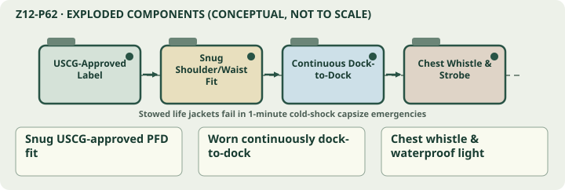

Z12-P62 · Extreme environments · New manuscript
Wear a fitted USCG-approved life jacket continuously on cold or open water
Eliminate sudden cold-shock drowning by wearing a properly buckled life jacket whenever underway in small craft.
When it applies · Canoes, kayaks, rowboats, motorboats and paddleboards on lakes, rivers and coastal/maritime waters.
Equipment · Properly sized U.S. Coast Guard-approved Personal Flotation Device (PFD) matched to user weight and activity, plus attached pea-less whistle.

Actions
- WEAR your buckled, properly fitted USCG-approved PFD continuously from dock launch to landing—sudden capsizes in cold water trigger 1-minute cold shock before anyone can dig stowed jackets out from under seats or buckle straps with numb fingers.[X04, X02]
- Check PFD fit snugly at shoulders and waist (it should not ride up over chin or ears when pulled upward at the shoulders), verify buckles/zippers are intact and confirm inflatable PFDs are properly armed and appropriate for the user and water class per label.[X04]
- Clip a pea-less safety whistle and small waterproof strobe/signal light directly onto the PFD chest where hands reach them while floating.[X04, E02, N09]
Failure recognition · Sitting on top of a loose life jacket in a calm-looking 48°F northern lake until a sudden wake flips the canoe and cold shock prevents swimming.[X04, X02]
Verify · Confirm every passenger (especially children in weight-rated child PFDs) has straps snugly buckled before casting off shore.[X04, ED]
Stop or change course · Never launch any small craft on cold, moving or open water with missing, damaged, unbuckled or improperly sized life jackets.[X04, X02]
Evidence and editorial notes
- E02 · NPS · Ten Essentials (current web edition)
- Section: Navigation; insulation; emergency shelter; emergency food and water · Conditions: Outdoor trips; adjust kit to season and route
Support: Carry essential systems including navigation, insulation, light, water and emergency shelter.
Limitations: Carrying items without practice or cold-weather verification does not ensure readiness. · Conflicting evidence: None; baseline kit system architecture.
Editorial note: Supports failure-mode packing and kit verification cards. · Specialist reviewer: Field education and search and rescue
Primary source · checked 2026-11-24 - N09 · NPS · Outdoor Emergency Plan (current web edition)
- Section: Outdoor Emergency Plan > Signaling, Lost-Person Protocol and SAR Handoff · Conditions: Lost or overdue party awaiting search and rescue
Support: Stay put once lost unless immediate danger requires moving to nearby safer ground; preserve footprints/clues, make visible contrast signals in open clearings, answer whistle/voice calls and stay ready for responder instructions.
Limitations: Unplanned wandering expands search radius exponentially and delays rescue contact. · Conflicting evidence: None; reinforces B014-P16, P17 and P20.
Editorial note: Core evidence for lost-person psychology, signaling and SAR coordination cards. · Specialist reviewer: Search and rescue
Primary source · checked 2026-11-24 - X02 · Minnesota DNR · Cold Water Safety (current web edition)
- Section: Cold Water Safety > Cold Shock, Swim Failure and Hypothermia · Conditions: Immersion in water below 70°F (especially below 50°F / winter ice water)
Support: Cold-water immersion triggers immediate involuntary gasp and hyperventilation (cold shock in the first 1–3 minutes), followed by rapid swimming failure (within ~10–15 minutes) before core hypothermia develops; wearing a fastened life jacket keeps the airway above water.
Limitations: Strong swimmers drown rapidly from cold shock and muscle incapacitation without flotation. · Conflicting evidence: Refutes myth that hypothermia is the only immediate cold-water killer.
Editorial note: Core physiological evidence for Z12 ice-breakthrough and maritime immersion cards. · Specialist reviewer: Cold-water rescue and wilderness medicine
Primary source · checked 2026-11-24 - X04 · US Coast Guard · Wearing Your Life Jacket (current web edition)
- Section: Wearing Your Life Jacket > Fit, Flotation and Cold Water · Conditions: Boating, paddling, coastal craft and icy-shoreline marine operations
Support: A properly fitted, buckled U.S. Coast Guard-approved life jacket matched to user weight and activity prevents cold-shock drowning and preserves consciousness time after capsizing—stowed jackets are rarely put on in time during sudden immersion.
Limitations: Inflatable PFDs require arming inspection and are unsuitable for high-impact whitewater or non-swimmers per label. · Conflicting evidence: None; aligns with USCG-SAFE.
Editorial note: Grounds PFD readiness and maritime abandonment cards in Z12. · Specialist reviewer: Maritime safety and search and rescue
Primary source · checked 2026-11-24
Source lineage · USCG life jacket wear and NWS cold water; new manuscript · Classification · New manuscript.